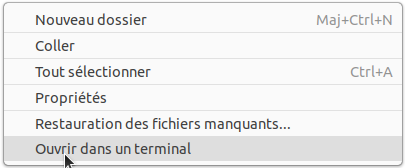

C1 Systèmes d'exploitation
Activités
 Activité 1 : Découverte des OS, logiciels libres
Activité 1 : Découverte des OS, logiciels libres
- Rendez-vous sur la page de téléchargement du logiciel vlc. :
- Pourquoi faut-il télécharger une version différente de VLC suivant qu'on utilise Windows, MacOS, Linux ou Android ?
- Pouvez-vous associer chaque icône au logiciel qu'il représente ?
- En faisant des recherches sur le Web, rédiger une réponse brève aux questions suivantes :
- Que sont Windows, MacOS, Linux et Android ?
- Quel est le rôle de ces logiciels sur un ordinateur ?
- Que signifie le mot libre dans la phrase : "VLC est un lecteur multimédia gratuit et libre" ?
Activité 2 : Initiation à la ligne de commande
Cette initiation se fait à travers la réalisation de missions dans un mini jeu d'aventures appelé gameshell.
-
Installation de Gameshell :
- Télécharger le fichier gameshell.
- Ouvrir l'explorateur de fichier.
- Créer un répertoire
gameshelldans votre dossier personnel - Dans ce répertoire, copier le fichier gameshell que vous avez téléchargé.
- Faire un clic droit sur le fichier et dans l'onglet permission cocher la case 'Autoriser l'exécution du fichier comme un programme', comme illustré ci-dessous :

- Faire un clic droit dans la fenêtre de l'explorateur de fichier et sélectionner "ouvrir dans un terminal" comme illustré ci-dessous :

- Dans le terminal taper :
-
Parallèlement à l'exécution des missions :
- Noter les commandes que vous utilisez et leur signification
- Tenir à jour un plan du monde dans lequel se déroule le jeu
Aide
Pour la première mission, vous devez donc noter le sens des commandes
cd,lsetpwdet commencer le schéma suivant qui sera à poursuivre tout au long des missions :graph TD A[Monde] --> B[Chateau] A --> C[Echoppe] A --> D[Forêt] A --> E[Jardin] A --> F[Montagne]
Poursuivre ce travail à la maison
Le but est d'atteindre la mission 15, vous pouvez poursuivre ce travail à la maison en installant Gameshell, suivre les instructions que vous trouverez sur cette page.
Cours
Vous pouvez télécharger une copie au format pdf du diaporama de synthèse de cours présenté en classe :
Attention
Ce diaporama ne vous donne que quelques points de repères lors de vos révisions. Il devrait être complété par la relecture attentive de vos propres notes de cours et par une révision approfondie des exercices.
QCM
1. Une et une seule de ces affirmations est fausse. Laquelle ?
- a) Un système d'exploitation libre est la plupart du temps gratuit
- b) Je peux contribuer à un système d'exploitation libre
- c) Il est interdit d'étudier un système d'exploitation propriétaire
- d) Un système d'exploitation propriétaire est plus sécurisé
- a)
Un système d'exploitation libre est la plupart du temps gratuit - b)
Je peux contribuer à un système d'exploitation libre - c)
Il est interdit d'étudier un système d'exploitation propriétaire - d) Un système d'exploitation propriétaire est plus sécurisé
2. Quelle est l'effet de la commande cd .. ?
- a) Changer le répertoire courant vers le répertoire parent
- b) Ejecter le CD
- c) Copier le contenu du répertoire courant dans un répertoire caché
- d) Supprimer le répertoire courant
- a) Changer le répertoire courant vers le répertoire parent
- b)
Ejecter le CD - c)
Copier le contenu du répertoire courant dans un répertoire caché - d)
Supprimer le répertoire courant
3. Quel est le rôle de la commande ls ?
- a) Basculer en mode administrateur
- b) Lister le contenu du répertoire courant
- c) Effacer le contenu du répertoire courant
- d) Donner un accès complet à un fichier
- a)
Basculer en mode administrateur - b) Lister le contenu du répertoire courant
- c)
Effacer le contenu du répertoire courant - d)
Donner un accès complet à un fichier
4. Dans un terminal sous Linux, quelle commande faut-il écrire pour donner à tout le monde le droit d'écriture sur le fichier information.py ?
- a)
chmod o+w information.py - b)
chmod a+w information.py - c)
chmod o+x information.py - d)
chmod a+x information.py
- a)
chmod o+w information.py - b)
chmod a+w information.py - c)
chmod o+x information.py - d)
chmod a+x information.py
5. Quel est l'effet de la commande chmod u+w fichier.txt ?
- a) de permettre au propriétaire du fichier de modifier le contenu de ce fichier
- b) d'interdire au propriétaire de modifier le contenu de ce fichier
- c) d'interdire à tous les autres utilisateurs de lire le fichier
- d) d'effacer le fichier
- a) de permettre au propriétaire du fichier de modifier le contenu de ce fichier
- b)
d'interdire au propriétaire de modifier le contenu de ce fichier - c)
d'interdire à tous les autres utilisateurs de lire le fichier - d)
d'effacer le fichier
6. Dans la console Linux, quelle commande faut-il exécuter pour obtenir la documentation de la commande pwd ?
- a)
man pwd - b)
cd pwd - c)
mkdir pwd - d)
ls pwd
- a)
man pwd - b)
cd pwd - c)
mkdir pwd - d)
ls pwd
7. Lequel de ces systèmes d'exploitation est sous licence propriétaire ?
- a) Android
- b) Linux
- c) Windows
- d) Ubuntu
- a)
Android - b)
Linux - c) Windows
- d)
Ubuntu
8. Une application doit écrire sur le disque dur de l'ordinateur, laquelle des affirmations suivantes est vraie ?
- a) Elle peut le faire quand bon lui semble
- b) Elle doit en faire la demande au système d'exploitation
- c) Elle doit en faire la demande aux autres applications qui fonctionnent sur l'ordinateur
- d) Elle doit en faire la demande à l'utilisateur de l'ordinateur
- a)
Elle peut le faire quand bon lui semble - b) Elle doit en faire la demande au système d'exploitation
- c)
Elle doit en faire la demande aux autres applications qui fonctionnent sur l'ordinateur - d)
Elle doit en faire la demande à l'utilisateur de l'ordinateur
Exercices
Exercice 1 : Les bases de la ligne de commande
- En utilisant uniquement la ligne de commande, créer l'arborescence suivante dans votre répertoire personnel :
graph TD A[Cours] --> B[C1-OS] A[Cours] --> G[C2-Binaire] B --> C[Exercices] B --> D[Activités] B --> E[Notes] B --> F[Python]
- Renommer le dossier
CoursenNSI - Aller dans le dossier
NSI - Taper la commande
tree, quel est l'effet de cette commande ?
Exercice 2 : Calendrier
- Ouvrir un terminal et y tester la commande
cal - Lire la documentation de cette commande
- Quel était le jour de la semaine le 26 juin 1815 ?
- Quel commande faut-il écrire pour afficher le calendrier du mois de mai 1970 ?
Exercice 3 : Python en ligne de commande
Le langage Python peut être invoqué à partir de la ligne de commande, taper simplement python dans un terminal. L'invite de commande se transforme en >>>, on dit que Python est en mode console. Vous pouvez quitter Python en tapant exit().
-
Utiliser Python comme calculatrice
En mode console, Python vous fournira directement les résultats de calculs, taper par exemple :15+5*5, dans quel ordre les opérations sont-elles effectuées ?-
2**5, de quelle opération s'agit-il ?Aide
Tester d'autres valeurs par exemple
7**2ou2**3pour vous aider -
20%3et20//3, de quelle opération s'agit-il ? (tester d'autres valeurs si nécessaire) - En utilisant Python, donner le résultat de \(9^{10} - 10^9\).
- En utilisant Python, convertir 17899132 minutes en jours, heures et minutes.
-
Obtenir de l'aide en python
- Tester les expressions Python
chr(33),chr(72),chr(125) - Pour connaître l'utilité de cette fonction taper
help(chr)
- Tester les expressions Python
Exercice 4 : Ecrire dans un fichier
Rappel
- La commande
touchpermet de créer un fichier vide, par exempletouch bidule.txtcrée un fichier vide nommébidule.txtdans le répertoire courant. - La commande
catpermet d'afficher le contenu d'un fichier dans le terminal
- Créer un fichier vide appelé
monfichier.txt - La commande
echo- Tester la commande
echo, en tapant par exempleecho "Bonjour tout le monde" - Pour écrire dans un fichier on peut rediriger la sortie de la commande
echoà l'aide du caractère>. Tester en tapant par exempleecho "NSI c'est génial !" > monfichier.txt - Afficher la contenu du fichier pour vérifier qu'il a été modifié.
- Tester la commande
- Un éditeur de texte dans le terminal
- Taper la commande
nano monfichier.txt -
Utiliser cet éditeur de texte minimal afin de modifier le fichier puis l'enregistrer.
Aide
Les commandes principales s'affichent en bas de page, le caractère
^désigne la touche Ctrl
- Taper la commande
Exercice 5 : Ranger un dossier
- Télécharger et décompresser le dossier A_Ranger.
- Lister le contenu de ce dossier, quels types de fichier contient-t-il ?
- Dans le dossier
A_ranger, créer les dossiersTexte,HTMLetPython. -
Déplacer les fichiers de chaque type dans le dossier correspondant
Aide
Déplacer les fichiers un à un serait long à fastidieux. Penser à utiliser le caractère
*qui remplace n'importe quelle suite de caractères dans les noms de fichiers.
Exercice 6 : Gestion des droits sur un fichier
- Quelle commande permet d'afficher les droits sur les fichiers d'un répertoire ?
- Quels sont les trois droits définis par un système de type Linux et leurs signfications ?
-
Compléter le tableau suivant :
Commande Résultat chmod g+x monfichier... Enlever le droit d'écriture pour le propriétaire du fichier chmod go-rwx monfichier... chmod a+x monfichier... ..... Attribuer les droits de lecture, d'écriture et d'exécution aux autres .... Enlever les droits d'écriture au groupe et aux autres
Exercice 7 : Chercher des fichiers
- Lire les premières lignes de la documentation de la commande
find. A quoi sert cette commande ? -
Tester la commande
find ~ -name "gameshell". Expliquer le résultat obtenu et l'effet de la commande.Aide
- On rappelle que
~désigne votre répertoire personnel. - A l'activité 2,
gameshellavait été téléchargé puis copier dans un repertoire, deux exemplaires de ce fichiers devraient donc se trouver dans votre répertoire personnel
- On rappelle que
-
Sachant que les commandes du système se trouvent dans le repertoire
/usr/bin, lister toutes les commandes dont le nom se terminent pardir(rmdiretmkdirdevraient donc apparaître). -
Lister tous les commandes dont le nom commence par
ls.
Exercice 8 : Enigme
- Télécharger puis décompresser le fichier
Enigme. -
En utilisant uniquement la ligne de commande, trouver six lettres avec les indices suivants :
- Lettre n° 1 : "cachée dans le dossier
Enigmeque vous avez téléchargé" - Lettre n° 2 : "son code ascii est 71"
- Lettre n° 3 : "deuxième lettre du jour de la semaine du 23 juin 1912"
- Lettre n° 4 : "La commande
wcvous permettra de compter le nombre de caractères du fichier lettre 4 qui se trouve dansEnigme. Diviser le résultat obtenu par 1956 pour avoir la position dans l'alphabet de la quatrième lettre" - Lettre n° 5 : "Lorsque cette lettre est donnée en option à la commande
cp, elle permet de copier un dossier et tout ce qu'il contient" - Lettre n°6 : "La commande
eogvous permettra de découvrir la lettre6".
- Lettre n° 1 : "cachée dans le dossier
-
Remettre dans l'ordre les six lettres obtenus pour trouver le nom d'un célèbre informaticien.